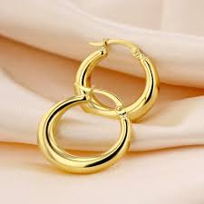
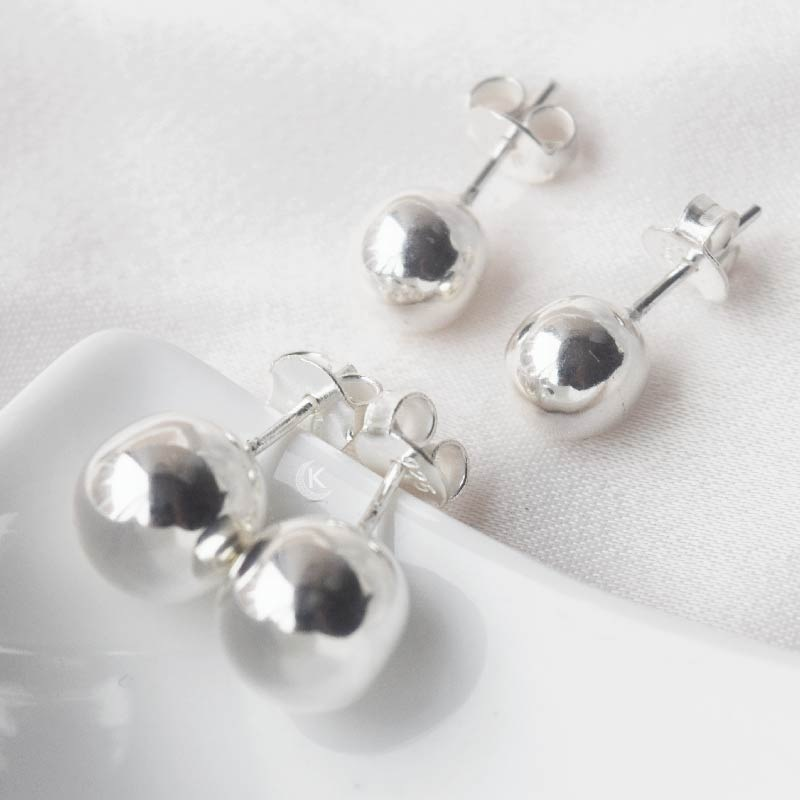
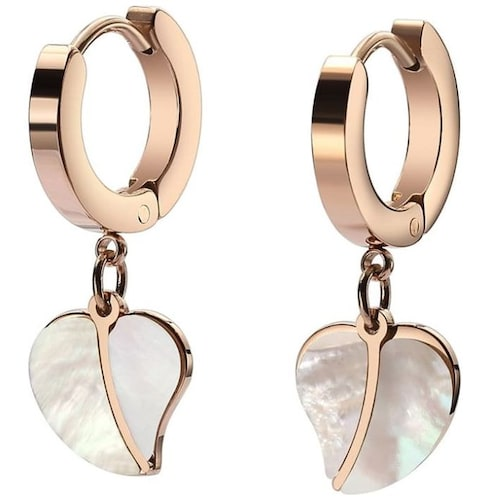
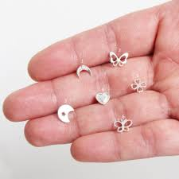
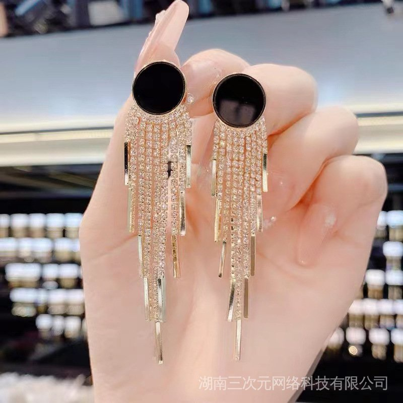
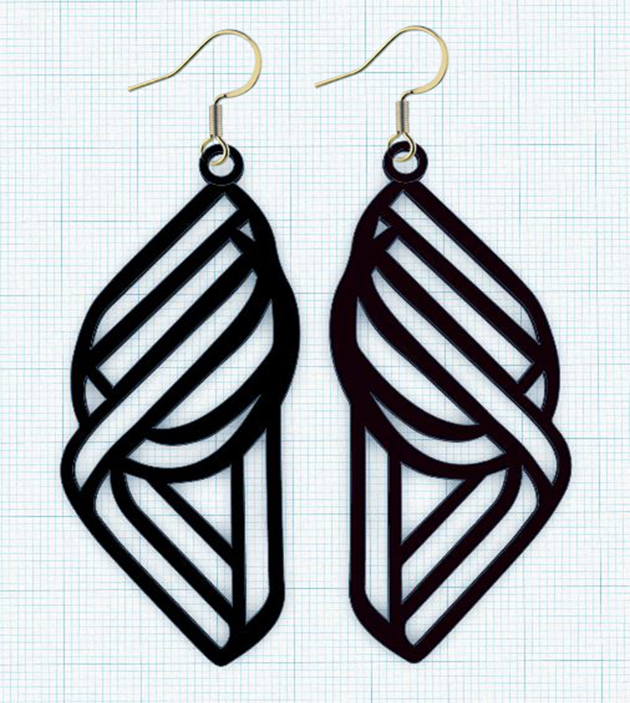
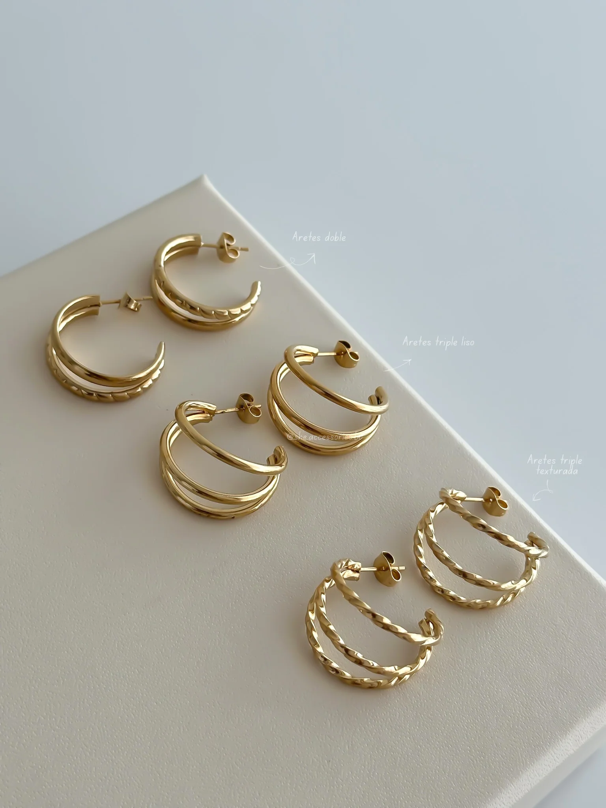
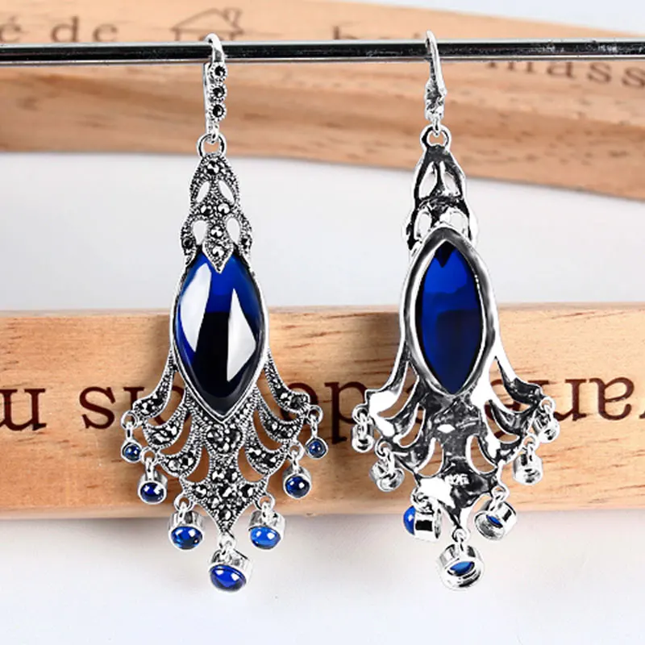
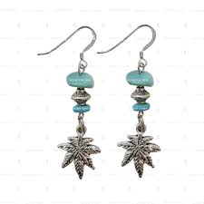
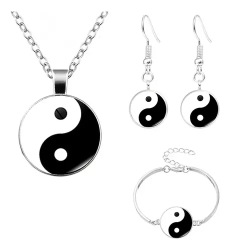

| Tipo | Descripción | Imagen |
|---|---|---|
| Aretes de oro | Hechos de oro de alta calidad |  |
| Aretes de plata | Hechos de plata de alta calidad |  |
| Aretes de acero inoxidable | Hechos de acero inoxidable resistente |  |
| Aretes minimalistas | Diseño simple y elegante |  |
| Aretes elegantes | Diseño sofisticado y lujoso |  |
| Aretes modernos | Diseño innovador y actual |  |
| Aretes pequeños | Tamaño reducido para orejas delicadas | |
| Aretes medianos | Tamaño estándar para orejas normales |  |
| Aretes grandes | Tamaño aumentado para orejas más grandes |  |
| Aretes con pendientes | Incluyen pendientes adicionales |  |
| Aretes con dijes | Incluyen dijes personalizados |  |